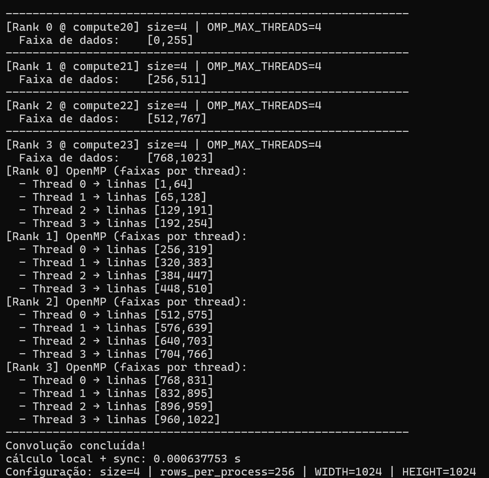

MPI e OpenMP¶
Agora que vocês aprenderam sobre MPI e já trabalharam bastante com OpenMP, vamos juntar o melhor dos dois mundos!
Combinar essas duas abordagens é uma estratégia poderosa em computação de alto desempenho. Enquanto o OpenMP permite paralelizar tarefas de forma simples e eficiente dentro de uma mesma máquina (memória compartilhada), o MPI possibilita distribuir o trabalho entre várias máquinas (memória distribuída).
Ao usar MPI + OpenMP juntos, conseguimos:
- Aproveitar ao máximo os recursos de clusters de alto desempenho, que possuem múltiplos nós (com MPI) e múltiplos núcleos por nó (com OpenMP).
- Reduzir o overhead de comunicação, evitando o uso excessivo de mensagens MPI quando podemos usar threads locais com OpenMP.
- Escalar aplicações de forma mais eficiente, especialmente em tarefas intensivas como simulações científicas, análise de dados em larga escala e modelagem computacional.
A convolução é uma técnica amplamente utilizada em visão computacional, redes neurais, filtragem de sinais e imagens, e é um excelente exemplo de aplicação que exige acesso a vizinhos para realizar o cálculo de cada ponto da saída.
O que o código faz:¶
- Inicializa uma imagem
1024x1024emrank 0. - Distribui a imagem completa para todos os processos via
MPI_Bcast. - Cada processo aplica a convolução apenas na sua faixa de linhas.
- O cálculo é feito de forma paralela com OpenMP, em múltiplos cores locais.
- O resultado local de cada processo é reunido no
rank 0usandoMPI_Gather. - O processo
rank 0imprime que a convolução foi concluída.
conv.cpp
// Convolução 2D com OpenMP + MPI
// Objetivo: ilustrar os efeitos da combinação de paralelismo inter-nó (MPI) e intra-nó (OpenMP)
#include <mpi.h>
#include <omp.h>
#include <algorithm>
#include <cstdlib>
#include <ctime>
#include <iostream>
#include <vector>
#include <climits>
#include <unistd.h>
#ifndef WIDTH
#define WIDTH 1024
#endif
#ifndef HEIGHT
#define HEIGHT 1024
#endif
#define KERNEL_SIZE 3
static const float KERNEL[KERNEL_SIZE][KERNEL_SIZE] = {
{1.f/9, 1.f/9, 1.f/9},
{1.f/9, 1.f/9, 1.f/9},
{1.f/9, 1.f/9, 1.f/9},
};
// Indexação linear (i,j) -> i*WIDTH + j
static inline int idx(int i, int j) { return i * WIDTH + j; }
int main(int argc, char** argv) {
MPI_Init(&argc, &argv);
int rank = 0, size = 1;
MPI_Comm_rank(MPI_COMM_WORLD, &rank);
MPI_Comm_size(MPI_COMM_WORLD, &size);
// Para manter o exemplo simples com MPI_Gather:
// exigimos divisão exata de HEIGHT por size.
const int rows_per_process = HEIGHT / size;
const int remainder = HEIGHT % size;
if (remainder != 0) {
if (rank == 0) {
std::cerr << "[ERRO] HEIGHT (" << HEIGHT << ") não é múltiplo de size ("
<< size << "). Escolha um número de ranks que divida HEIGHT "
<< "ou troque para MPI_Gatherv.\n";
}
MPI_Abort(MPI_COMM_WORLD, 1);
}
// Buffers contíguos
std::vector<float> image (HEIGHT * WIDTH);
std::vector<float> output(HEIGHT * WIDTH, 0.f);
// Rank 0 inicializa e depois faz broadcast
if (rank == 0) {
std::srand(static_cast<unsigned>(std::time(nullptr)));
for (int i = 0; i < HEIGHT; ++i)
for (int j = 0; j < WIDTH; ++j)
image[idx(i,j)] = static_cast<float>(std::rand() % 256);
}
MPI_Bcast(image.data(), HEIGHT * WIDTH, MPI_FLOAT, 0, MPI_COMM_WORLD);
// Faixa deste rank
const int start_row = rank * rows_per_process; // inclusivo
const int end_row = start_row + rows_per_process; // exclusivo
// Faixa efetiva (evita bordas globais e do bloco)
const int i_begin = std::max(start_row, 1);
const int i_end = std::min(end_row - 1, HEIGHT - 1); // exclusivo
// Cabeçalho por rank (ordenado para não embaralhar)
for (int r = 0; r < size; ++r) {
MPI_Barrier(MPI_COMM_WORLD);
if (rank == r) {
char host[128]; gethostname(host, sizeof(host));
int tmax = omp_get_max_threads();
std::cout << "------------------------------------------------------------\n";
std::cout << "[Rank " << rank << " @ " << host << "] "
<< "size=" << size
<< " | OMP_MAX_THREADS=" << tmax << "\n";
std::cout << " Faixa de dados: [" << start_row << "," << (end_row-1) << "]\n";
std::cout.flush();
}
}
MPI_Barrier(MPI_COMM_WORLD);
// Vamos medir a faixa REAL tocada por cada thread
const int tmax = omp_get_max_threads();
std::vector<int> t_min(tmax, INT_MAX); // por thread
std::vector<int> t_max(tmax, INT_MIN);
MPI_Barrier(MPI_COMM_WORLD);
const double t0 = MPI_Wtime();
// Paraleliza SOMENTE no laço de i (para facilitar leitura de faixas por thread)
#pragma omp parallel
{
const int tid = omp_get_thread_num();
int local_min = INT_MAX, local_max = INT_MIN;
#pragma omp for schedule(static)
for (int i = i_begin; i < i_end; ++i) {
for (int j = 1; j < WIDTH - 1; ++j) {
float sum = 0.f;
for (int ki = -1; ki <= 1; ++ki)
for (int kj = -1; kj <= 1; ++kj)
sum += image[idx(i+ki, j+kj)] * KERNEL[ki+1][kj+1];
output[idx(i,j)] = sum;
}
local_min = std::min(local_min, i);
local_max = std::max(local_max, i);
}
if (local_min <= local_max) {
t_min[tid] = local_min;
t_max[tid] = local_max;
}
}
MPI_Barrier(MPI_COMM_WORLD);
const double t1 = MPI_Wtime();
// Impressão das faixas por thread (ordenado por rank)
for (int r = 0; r < size; ++r) {
MPI_Barrier(MPI_COMM_WORLD);
if (rank == r) {
std::cout << "[Rank " << rank << "] OpenMP (faixas por thread):\n";
bool alguma = false;
for (int t = 0; t < tmax; ++t) {
if (t_min[t] <= t_max[t]) {
alguma = true;
std::cout << " - Thread " << t
<< " → linhas [" << t_min[t] << "," << t_max[t] << "]\n";
}
}
if (!alguma) std::cout << " (nenhuma thread recebeu iterações)\n";
std::cout.flush();
}
}
MPI_Barrier(MPI_COMM_WORLD);
// Reúne as faixas (contíguas) no rank 0
MPI_Gather(output.data() + start_row * WIDTH,
rows_per_process * WIDTH, MPI_FLOAT,
output.data(),
rows_per_process * WIDTH, MPI_FLOAT,
0, MPI_COMM_WORLD);
if (rank == 0) {
std::cout << "------------------------------------------------------------\n";
std::cout << "Convolução concluída!\n";
std::cout << "cálculo local + sync: " << (t1 - t0) << " s\n";
std::cout << "Configuração: size=" << size
<< " | rows_per_process=" << rows_per_process
<< " | WIDTH=" << WIDTH << " | HEIGHT=" << HEIGHT << "\n";
}
MPI_Finalize();
return 0;
}
Compile o binário com suporte para OpenMP e MPI:¶
mpic++ -O3 -fopenmp conv.cpp -o conv
Script SLURM¶
#!/bin/bash
#SBATCH --job-name=mpi_openmp
#SBATCH --output=saida_%j.txt
#SBATCH --nodes=4 # 4 nós (computadores)
#SBATCH --ntasks-per-node=1 # 1 rank por nó
#SBATCH --cpus-per-task=4 # 4 threads OMP por rank
#SBATCH --time=00:10:00
#SBATCH --partition=gpu
#SBATCH --mem=1G # 1 GiB por nó
export OMP_NUM_THREADS=${SLURM_CPUS_PER_TASK}
export OMP_PROC_BIND=close
export OMP_PLACES=cores
# Execute o seu binário com o MPI
mpirun -np $SLURM_NTASKS ./conv
Submeta o job com SLURM:¶
sbatch SeuSlurm.slurm
Dentro de cada rank, em vez de um único núcleo calcular todas as linhas, o trabalho é dividido entre 4 threads usando o OpenMP. Ou seja: cada rank distribui suas 256 linhas entre 4 threads locais.

MPI divide a imagem entre os nós (cada computador pega um pedaço), e OpenMP divide esse pedaço entre 4 CPU's dentro do nó de computação.
Sua vez!¶
- Quanto tempo esse código leva pra rodar no modo sequencial?
- Remova
OpenMPe compare os tempos só com MPI. - Remova
MPIe compare os tempos só com OpenMP. - Meça speedup em diferentes quantidades de processos e threads.